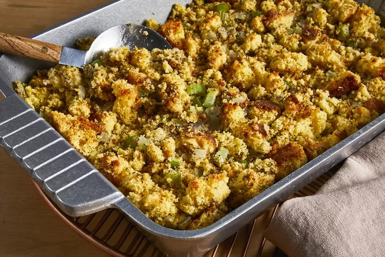

Cornbread Dressing Recipe

Description
Ready to make the best cornbread dressing of your life? You're in luck! This old-fashioned dressing recipe will quickly become a family favorite.
Be careful not to bake the dressing too long, as this will dry it out. Bake it just until it's golden brown around the edges.
Ingredients
- 3 cups crumbled cornbread
- 2 tablespoons butter
- 1 small onion, diced
- ½ cup chopped celery
- 2 large eggs, beaten
- 2 cups chicken stock
- 1 tablespoon dried sage, or more to taste
- salt and ground black pepper to taste
Steps
- Gather all ingredients.
- Preheat the oven to 350 degrees F (175 degrees C). Grease a 7x11-inch baking dish. Place crumbled cornbread in a large bowl.
- Melt butter in a large skillet over medium heat. Add onion and celery and sauté until soft, 5 to 7 minutes.
- Add sautéed onion and celery to the crumbled cornbread. Stir in chicken stock, eggs, sage, salt, and pepper until well combined. Pour dressing into the prepared baking dish.
- Bake in the preheated oven until dressing just starts to turn golden brown around the edges, about 30 minutes.
- Serve and enjoy!